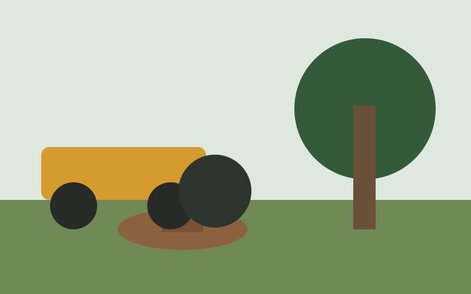
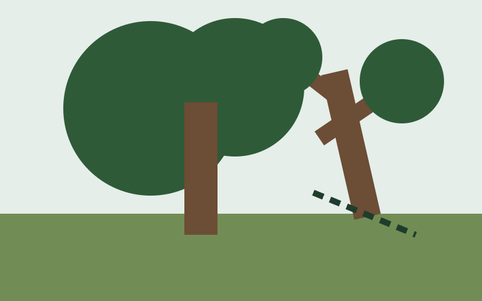
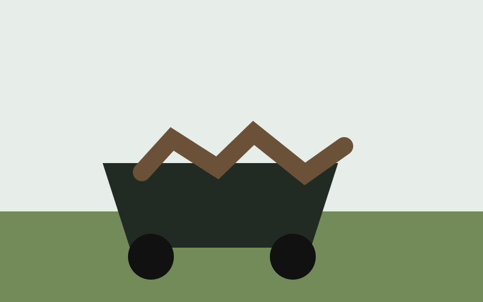
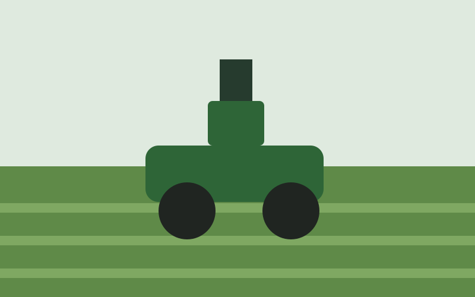
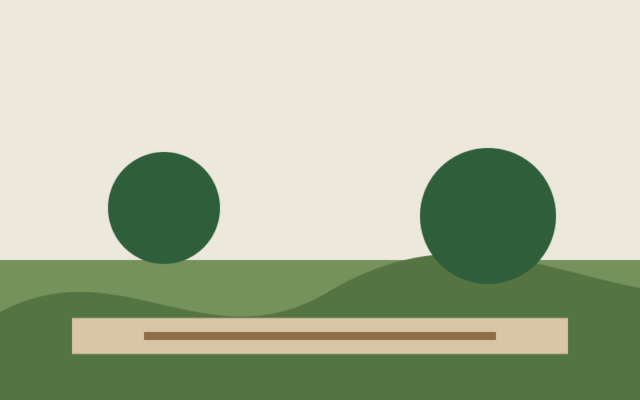
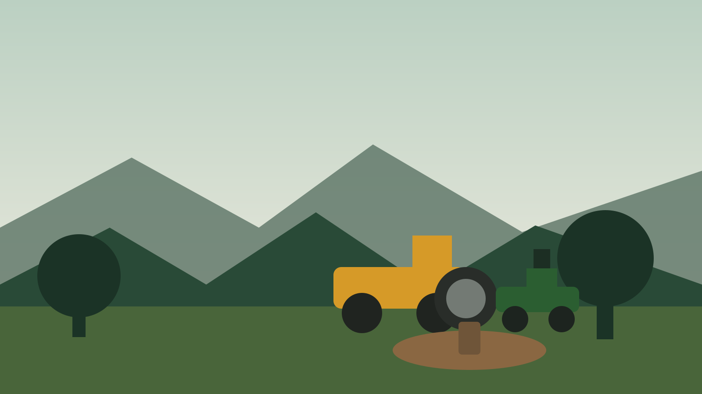

Your property.
Our work. Done right.
Veteran owned and operated in King George, VA. Core Land Services helps homeowners and property owners reclaim, clean up, and maintain their land with stump grinding, small tree removal, mowing, hauling, landscaping, and property cleanup.
Complete Property Services
From stubborn stumps to overgrown yards, Core Land Services brings dependable equipment and hands-on work to get the job done right.

Stump Grinding
Remove unwanted stumps and reclaim usable yard space with professional stump grinding.
Learn more →
Small Tree Removal
Removal of smaller unwanted, damaged, or overgrown trees with cleanup options available.
Learn more →
Brush & Debris Hauling
Branches, brush, and job debris can be loaded and hauled away so your property is left cleaner.
Learn more →
Lawn Mowing
Clean, consistent mowing with zero-turn equipment for a sharp, maintained property.
Learn more →
Landscaping & Cleanup
General landscaping, bed cleanup, brush work, and property cleanup tailored to your needs.
Learn more →
One Crew. One Call.
Combine grinding, cutting, cleanup, hauling, and mowing into one convenient property-service visit.
Request a quote →Built on Service.
Driven by Quality.
Core Land Services is a veteran-owned and operated local business based in King George, Virginia. We bring discipline, respect, and attention to detail to every property we work on.
Learn More About UsWhat you can expect
Ready for the Work
Core Land Services uses a Vermeer stump grinder and John Deere zero-turn mower. Exact equipment and attachments may vary as the business grows.
 Vermeer stump grinding
Vermeer stump grinding Zero-turn mowing
Zero-turn mowing Cleanup & hauling
Cleanup & haulingProudly Serving King George, Virginia
Based in King George and serving surrounding communities. Contact us with your location and project details to confirm availability.
View Service AreaGet a Free Quote
Tell us what you need and we’ll get back to you.